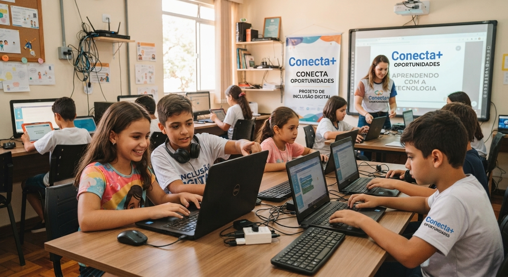

Equipamentos
Recolhemos computadores, notebooks e celulares para que possam ganhar um novo uso.
Inclusão digital desde 2023
O Conecta Oportunidades trabalha para aproximar grupos sociais vulneráveis da internet, da tecnologia e dos serviços digitais.
Veja como ajudar
Criado em 2023, o Conecta Oportunidades nasceu da percepção de que cada vez mais serviços do dia a dia estavam migrando para o meio digital. Acessar informações, estudar, buscar trabalho e realizar tarefas importantes passou a exigir conexão e familiaridade com a tecnologia.
Essa mudança pode deixar para trás pessoas e grupos que enfrentam barreiras de acesso, como a falta de equipamentos, internet ou oportunidades de aprendizado. A motivação do projeto é contribuir para que essas pessoas também possam participar da vida digital com mais autonomia.
Reunimos recursos e pessoas para tornar a tecnologia mais acessível e útil no cotidiano.
Recolhemos computadores, notebooks e celulares para que possam ganhar um novo uso.
Promovemos apoio para desenvolver habilidades e utilizar ferramentas digitais.
Buscamos facilitar o acesso a recursos digitais importantes para estudar, trabalhar e se comunicar.
Doar um equipamento, contribuir ou oferecer seu tempo ajuda a ampliar o acesso à tecnologia.
Quero ajudar